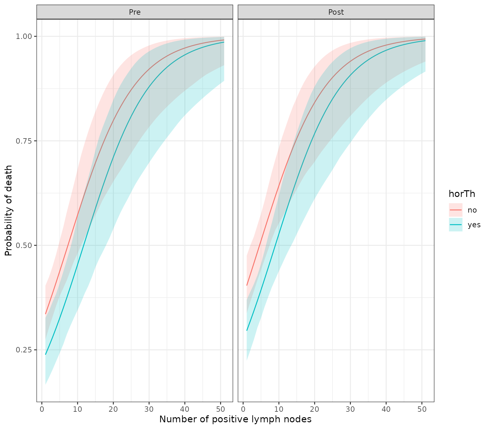

Bootstrap Simulation for model prediction
Source:vignettes/Bootstrap_Prediction.Rmd
Bootstrap_Prediction.RmdYou can make a bootstrap simulation for model prediction. When writing bootPredict function and this vignette, I was inspired from package finalfit by Ewen Harrison. For example, you can predict survival after diagnosis of breast cancer.
library(autoReg)
Warning in rgl.init(initValue, onlyNULL): RGL: unable to open X11 display
Warning: 'rgl.init' failed, running with 'rgl.useNULL = TRUE'.
library(dplyr) # for use `%>%`
Attaching package: 'dplyr'
The following objects are masked from 'package:stats':
filter, lag
The following objects are masked from 'package:base':
intersect, setdiff, setequal, union
data(GBSG2,package="TH.data")
head(GBSG2)
horTh age menostat tsize tgrade pnodes progrec estrec time cens
1 no 70 Post 21 II 3 48 66 1814 1
2 yes 56 Post 12 II 7 61 77 2018 1
3 yes 58 Post 35 II 9 52 271 712 1
4 yes 59 Post 17 II 4 60 29 1807 1
5 no 73 Post 35 II 1 26 65 772 1
6 no 32 Pre 57 III 24 0 13 448 1Data GBGS2 in TH.data package is a data frame containing the observations from the German Breast Cancer Study Group 2. In this data, the survival status of patients is coded as 0 or 1 in the variable cens. Whether the patient receive the hormonal therapy or not is recorded as ‘no’ or ‘yes’ in variable horTh. The number of positive lymph nodes are recoded in pnodes. You can make a logistic regression model with the following R code.
GBSG2$cens.factor=factor(GBSG2$cens,labels=c("Alive","Died"))
fit=glm(cens.factor~horTh+pnodes+menostat,data=GBSG2,family="binomial")
summary(fit)
Call:
glm(formula = cens.factor ~ horTh + pnodes + menostat, family = "binomial",
data = GBSG2)
Deviance Residuals:
Min 1Q Median 3Q Max
-3.1758 -0.9867 -0.8373 1.2379 1.6935
Coefficients:
Estimate Std. Error z value Pr(>|z|)
(Intercept) -0.79237 0.15183 -5.219 1.80e-07 ***
horThyes -0.47782 0.17578 -2.718 0.00656 **
pnodes 0.10853 0.01818 5.970 2.38e-09 ***
menostatPost 0.29375 0.16905 1.738 0.08228 .
---
Signif. codes: 0 '***' 0.001 '**' 0.01 '*' 0.05 '.' 0.1 ' ' 1
(Dispersion parameter for binomial family taken to be 1)
Null deviance: 939.68 on 685 degrees of freedom
Residual deviance: 887.36 on 682 degrees of freedom
AIC: 895.36
Number of Fisher Scoring iterations: 4You can make a publication-ready table with the following R command.
Dependent: |
|
Alive (N=387) |
Died (N=299) |
OR (multivariable) |
horTh |
no |
235 (60.7%) |
205 (68.6%) |
|
yes |
152 (39.3%) |
94 (31.4%) |
0.62 (0.44-0.87, p=.007) |
|
pnodes |
Mean ± SD |
3.8 ± 4.6 |
6.5 ± 6.1 |
1.11 (1.08-1.16, p<.001) |
menostat |
Pre |
171 (44.2%) |
119 (39.8%) |
|
Post |
216 (55.8%) |
180 (60.2%) |
1.34 (0.96-1.87, p=.082) |
You can draw a plot summarizing the model.
modelPlot(fit)
For bootstrapping simulation, you can make new data with the following R code.
newdata=expand.grid(horTh=factor(c(1,2),labels=c("no","yes")),
pnodes=1:51,
menostat=factor(c(1,2),labels=c("Pre","Post")))You can make a bootstrapping simulation with bootPredict() function. You can set the number of simulation by adjusting R argument.
df=bootPredict(fit,newdata,R=500)
head(df)
horTh pnodes menostat estimate lower upper
1 no 1 Pre 0.3354033 0.2732113 0.4005656
2 yes 1 Pre 0.2383652 0.1624528 0.3127804
3 no 2 Pre 0.3600105 0.3016265 0.4224921
4 yes 2 Pre 0.2586235 0.1819977 0.3317877
5 no 3 Pre 0.3853762 0.3278100 0.4463090
6 yes 3 Pre 0.2799707 0.2021469 0.3546545With this result, you can draw a plot showing bootstrapping prediction of breast cancer.
library(ggplot2)
ggplot(df,aes(x=pnodes,y=estimate))+
geom_line(aes(color=horTh))+
geom_ribbon(aes(ymin=lower,ymax=upper,fill=horTh),alpha=0.2)+
facet_wrap(~menostat)+
theme_bw()+
labs(x="Number of positive lymph nodes", y="Probability of death")